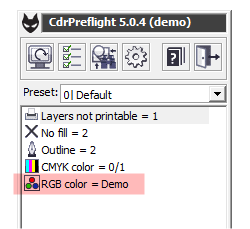
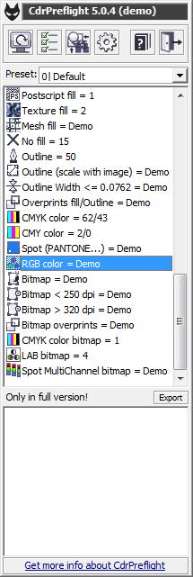
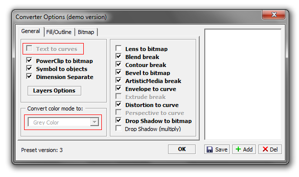
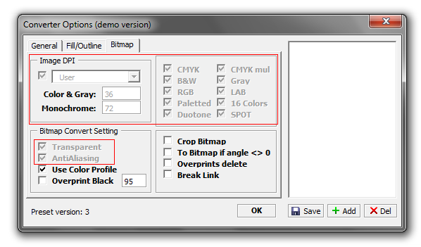

CdrPreflight, демо версии быть?!
Sancho / 29.07.2010, 12:50/00:41
Форум:
В общем думаю стоит сделать демо версию макроса CdrPreflight.
Полнофункциональную версию с ограниченным сроком работы я точно делать не буду, ибо любое временное ограничение можно не сильно сложно обойти.
Поэтому остаётся вариант ограниченной функциональности — самые "вкусные" части будут закрыты надписью "demo".
Полнофункциональную версию с ограниченным сроком работы я точно делать не буду, ибо любое временное ограничение можно не сильно сложно обойти.
Поэтому остаётся вариант ограниченной функциональности — самые "вкусные" части будут закрыты надписью "demo".

Бунусов в демке не будет.
По поводу конвертера ещё думаю.
Ну и вообще, кто что думает, надо дему делать или нет? :)
Заранее спасибо
В модуле поиска информации как и было запланировано, закрыты все "вкусности" +/-.

В конвертере закрыты настройки изменения цветовой модели, и ресемплинга растровых изображений. В демо версии макрос будет, помимо настроек пользователя, преобразовывать всё в чёрно-белое, а картинки переводить в 36 dpi.
 